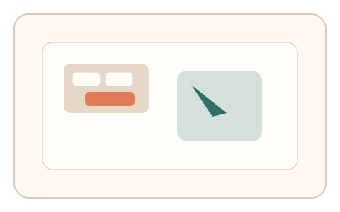
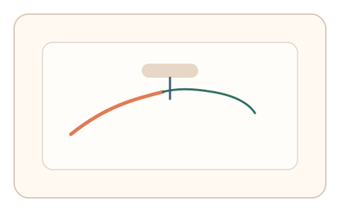
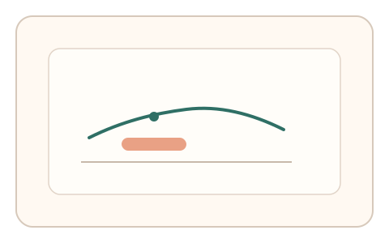

#5
生物肌肉与鼠标运动
已扩展
双手协同微调
通过键盘与指针双通道协作，验证手眼协同与通道切换的连续性。
概念原文
用户按住一个键调整光标灵敏度，同时完成细微轨迹穿越。系统评估“手眼+指令协同”的微调能力与延迟。
引入多通道同步控制（鼠标+键盘），强调人类协调的连续性，而非单一动作完成度。
研究背景
双手协同控制与手眼协调是人类操作的稳定特征，涉及多通道时序同步与连续控制。将“键盘切换灵敏度 + 指针精细操作”组合，可要求用户在两个输入通道间进行实时协调，脚本难以自然模拟。
核心机制
- 用户按键切换指针灵敏度或模式。
- 在单次任务中完成粗定位与细定位。
- 记录切换时序、过渡平滑度与微调行为。
- 评估“按键‑指针”协调的连续性与延迟。
用户流程
- 步骤 1：用户按住键盘键进入低灵敏度模式。
- 步骤 2：用户完成粗定位后释放键并细调到目标。
- 步骤 3：系统分析切换时序与轨迹连续性。
判定信号
按键状态变化与指针速度的对齐度
人类在通道切换时呈现可观察的时序耦合。
切换过渡区的轨迹连续性
真实操控会出现平滑过渡而非突变。
判定逻辑
基于按键事件与指针速度曲线的同步性、切换前后轨迹连续度进行综合判定；若通道切换与轨迹无关联则判异常。
对抗面
- 脚本同时驱动键盘与鼠标事件
- 通过预录轨迹回放模拟双通道
防御与缓解
- 随机化切换条件与灵敏度曲线
- 加入微扰与多次切换要求，提升一致性难度
- 联合微抖动与过冲‑回拉作为辅判
可达性与风险
提供单通道替代（例如滑杆切换灵敏度），并允许用户选择触控等输入方式。
- 需要键盘输入的任务可能不适用于移动端
- 对新手用户可能增加学习成本
可视化状态

状态 1：双通道提示
提示按键切换灵敏度并进入粗定位。

状态 2：协同微调
按键切换时轨迹连续过渡到细调。

状态 3：时序一致性
分析按键事件与速度曲线对齐度。
参考资料
Bimanual coordination
说明双手协同控制的规律。
Hand–eye coordination
说明手眼协调的多通道协作特性。